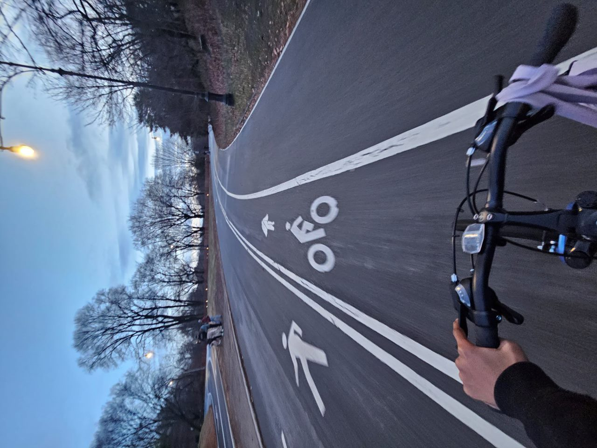
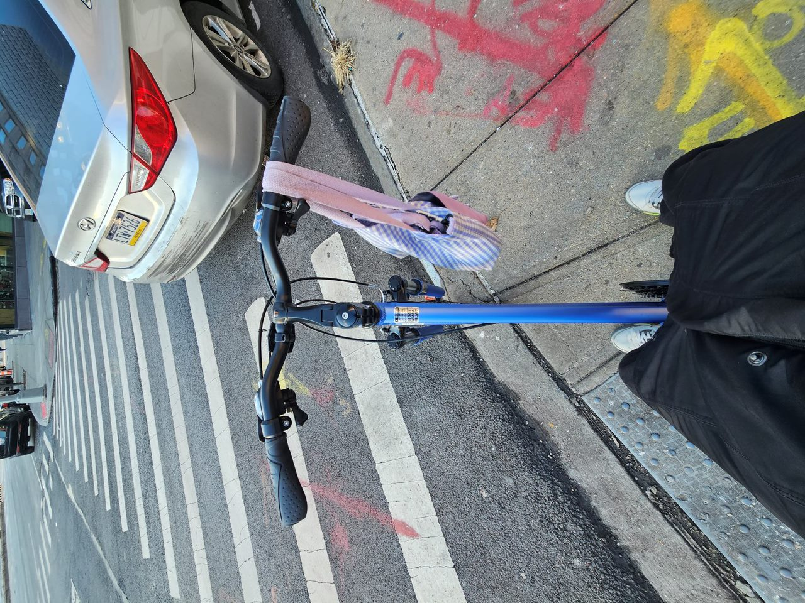

Biking is a hobby that I picked up during the colder seasons and I still like it. I like to go on long bike rides whilst listening to music on any genre. The furthest I ever biked was 25 miles but my next goal is 30 to 35 miles and to just build up from there.